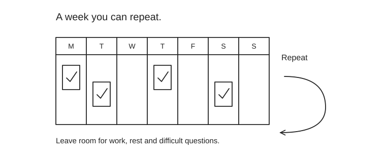

Twelve weeks to finance-facing evidence
This is a job-readiness track for someone who already knows Python, statistics and ML. Allow roughly 4–5 hours a week, alongside the separate CFA study budget. It is not a promise to finish Level I in twelve weeks.

| Weeks | Focus | Work | Evidence |
|---|---|---|---|
| 1–2 | Financial statements and cash | Read the first two foundations; trace one public company’s statements. | A one-page profit-to-cash explanation. |
| 3–4 | Forecast and valuation | Build a simple forecast; change revenue growth, margin and discount rate. | An Excel model and a recommendation with three scenarios. |
| 5–6 | SQL and business reporting | Create a customer-month dataset; reconcile totals, deduplicate and calculate cohorts. | A documented query and one decision-focused chart. |
| 7–9 | Choose one role case | Consumer-bank analytics: retention and campaign economics. Risk: calibration and expected loss. Finance BI: budget variance. | Reproducible analysis with a baseline, validation and business tradeoff. |
| 10 | Communicate | Turn the case into five slides. Ask someone to challenge the assumptions. | Five-minute presentation and a one-page executive memo. |
| 11 | Target applications | Read entire job specifications. Map real experience to each mandatory requirement. | A tailored CV and a small shortlist of genuine matches. |
| 12 | Interview rehearsal | Run the SQL exercise and two business cases. Practice six behavioral stories. | A recording, feedback notes and specific repairs. |
How to use two years of AI experience
Translate genuine experience into the employer’s language: data validation → reliable financial reporting; model evaluation → risk and decision tradeoffs; production monitoring → controlled analytical operations; research → reproducible evidence. Describe what you actually did. A personal project demonstrates learning; it does not become two years of VBA, banking or application-support employment.
Match the case to the role
- Synchrony: explain which customer segment to target, incremental value and the experiment you would run.
- Amazon finance analytics: reconcile a metric from source to report and show the action it supports; check the exact VBA requirement first.
- Portfolio analytics: explain benchmark-relative performance, attribution and data integrity; industry experience may still be required.
- Quantitative risk: defend assumptions, calibration, stress tests and monitoring rather than presenting only model accuracy.
Your weekly review
Answer three questions: What can I now explain? What can I demonstrate? What still blocks the target role? If the output is only “watched more lectures,” convert one lesson into an exercise. In the final six weeks before the CFA exam, reduce project work and prioritize exam readiness.